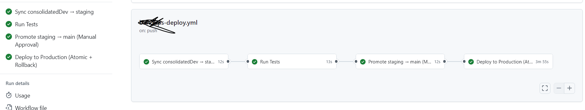

Atomic Deployment Strategy
Problem
Deployments caused downtime.
Solution
Implemented zero-downtime deployment with rollback.
Impact
- No downtime deployments
- Safe rollbacks
Architecture

Tech Stack
Docker, CI/CD
Lessons Learned
- Rollback strategy is essential